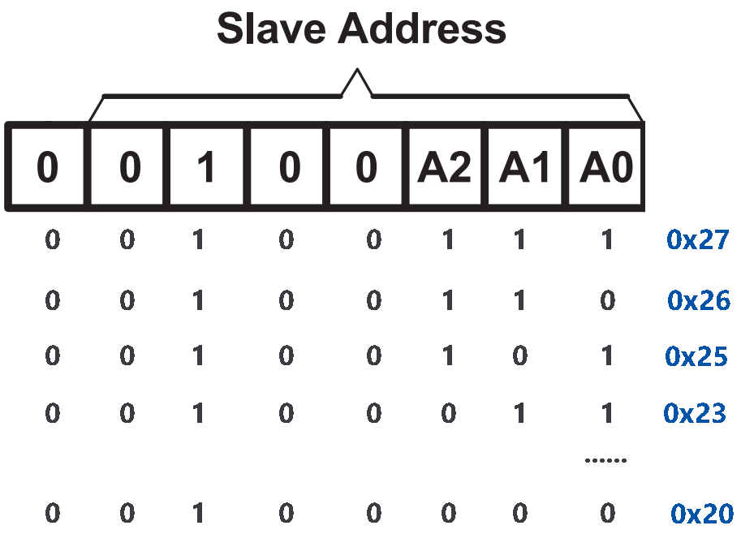
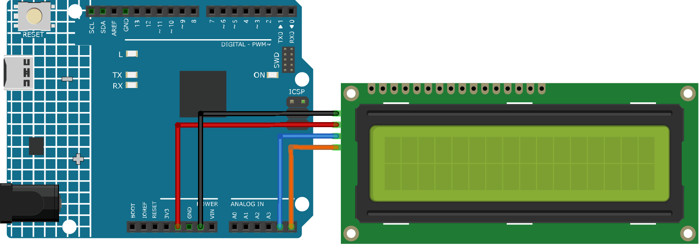

Bemerkung
Hallo und willkommen in der SunFounder Raspberry Pi & Arduino & ESP32 Enthusiasten-Gemeinschaft auf Facebook! Tauchen Sie tiefer ein in die Welt von Raspberry Pi, Arduino und ESP32 mit anderen Enthusiasten.
Warum beitreten?
Expertenunterstützung: Lösen Sie Nachverkaufsprobleme und technische Herausforderungen mit Hilfe unserer Gemeinschaft und unseres Teams.
Lernen & Teilen: Tauschen Sie Tipps und Anleitungen aus, um Ihre Fähigkeiten zu verbessern.
Exklusive Vorschauen: Erhalten Sie frühzeitigen Zugang zu neuen Produktankündigungen und exklusiven Einblicken.
Spezialrabatte: Genießen Sie exklusive Rabatte auf unsere neuesten Produkte.
Festliche Aktionen und Gewinnspiele: Nehmen Sie an Gewinnspielen und Feiertagsaktionen teil.
👉 Sind Sie bereit, mit uns zu erkunden und zu erschaffen? Klicken Sie auf [hier] und treten Sie heute bei!
I2C LCD 1602

Einführung
Ein I2C LCD1602 ist ein Gerät, das Text und Zeichen auf einem 16x2 Flüssigkristall-Display (LCD) über das I2C-Protokoll darstellen kann. Es eignet sich hervorragend zur Anzeige von Informationen in Ihren Arduino-Projekten, wie etwa Sensorwerten, Meldungen oder Menüs. Das I2C-Modul enthält einen integrierten PCF8574 I2C-Chip, der serielle I2C-Daten in parallele Daten für das LCD umwandelt.
Funktionsprinzip
Das I2C LCD1602 setzt sich aus einem standardmäßigen LCD1602 und einem auf der Rückseite befestigten I2C-Modul zusammen. Dieses Modul ermöglicht die Erweiterung der I/O-Ports des Arduino über das I2C-Protokoll. Dabei kommen lediglich zwei Drähte zum Einsatz: SDA (Serial Data) und SCL (Serial Clock). Der I2C-Chip wandelt die Signale vom Arduino in Befehle für das LCD um. Jede der 16x2 Zellen des LCD kann Zeichen oder Symbole anzeigen. Diese Zellen bestehen aus je 5x8 Punkten, die durch Spannung ein- oder ausgeschaltet werden können. Verschiedene Kombinationen der Punkte erlauben die Darstellung unterschiedlicher Zeichen und Symbole.

I2C-Adresse
Die Standardadresse ist normalerweise 0x27, in einigen Fällen jedoch auch 0x3F.
Wenn wir die Standardadresse von 0x27 als Beispiel nehmen, kann die Geräteadresse durch Kurzschließen der A0/A1/A2-Pads geändert werden. Im Ausgangszustand ist A0/A1/A2 auf 1 gesetzt und wenn das Pad kurzgeschlossen wird, ist A0/A1/A2 auf 0.


Hintergrundbeleuchtung/Kontrast
Die Hintergrundbeleuchtung kann mittels Jumper aktiviert werden; zum Deaktivieren wird dieser entfernt. Das blaue Potentiometer auf der Rückseite dient zur Kontrasteinstellung.

Shorting Cap: Aktiviert die Hintergrundbeleuchtung; zum Deaktivieren entfernen.
Potentiometer: Dient zur Kontrastanpassung (Klarheit der Textanzeige), im Uhrzeigersinn erhöht, gegen den Uhrzeigersinn verringert.
Bemerkung
Nach dem Verdrahten des LCD sollte man das Arduino einschalten und den Kontrast mittels Drehen des Potentiometers so einstellen, dass die erste Reihe von Rechtecken erscheint.
Anwendungsbeispiele
Hardware-Komponenten
Arduino Uno R4 oder R3 Platine * 1
I2C LCD1602 * 1
Jumperkabel
Schaltungsaufbau


Programmcode
Bemerkung
Um die Bibliothek zu installieren, nutzen Sie den Arduino-Bibliotheksmanager und suchen nach „LiquidCrystal I2C“.
Code-Erklärung
Einbinden der Bibliothek und Initialisierung des LCD:
Die LiquidCrystal I2C-Bibliothek wird eingebunden, um Funktionen und Methoden für die LCD-Ansteuerung bereitzustellen. Danach wird ein LCD-Objekt der Klasse LiquidCrystal_I2C erstellt, wobei die I2C-Adresse sowie die Anzahl der Zeilen und Spalten angegeben werden.
#include <LiquidCrystal_I2C.h> LiquidCrystal_I2C lcd(0x27, 16, 2);
Setup-Funktion:
Die
setup()-Funktion wird einmalig bei Arduino-Start ausgeführt. Hier wird das LCD initialisiert, der Bildschirm geleert und die Hintergrundbeleuchtung aktiviert. Anschließend werden zwei Nachrichten auf dem LCD angezeigt.void setup() { lcd.init(); // initialize the LCD lcd.clear(); // clear the LCD display lcd.backlight(); // Make sure backlight is on // Print a message on both lines of the LCD. lcd.setCursor(2, 0); //Set cursor to character 2 on line 0 lcd.print("Hello world!"); lcd.setCursor(2, 1); //Move cursor to character 2 on line 1 lcd.print("LCD Tutorial"); }
Weitere Ideen
Integration eines Temperatursensors zur Anzeige der aktuellen Raumtemperatur auf dem LCD.